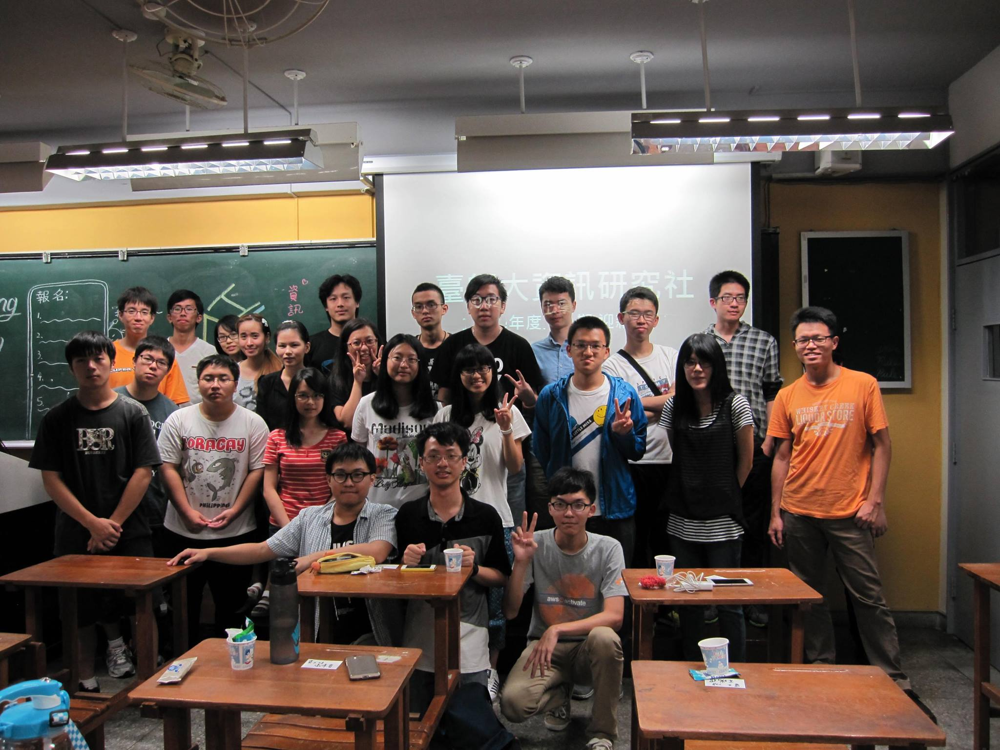
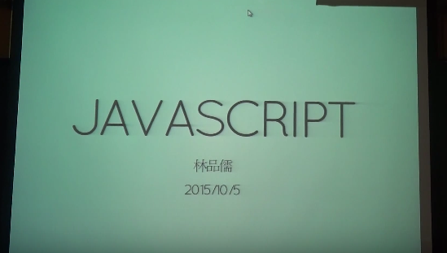
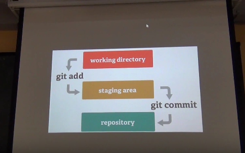
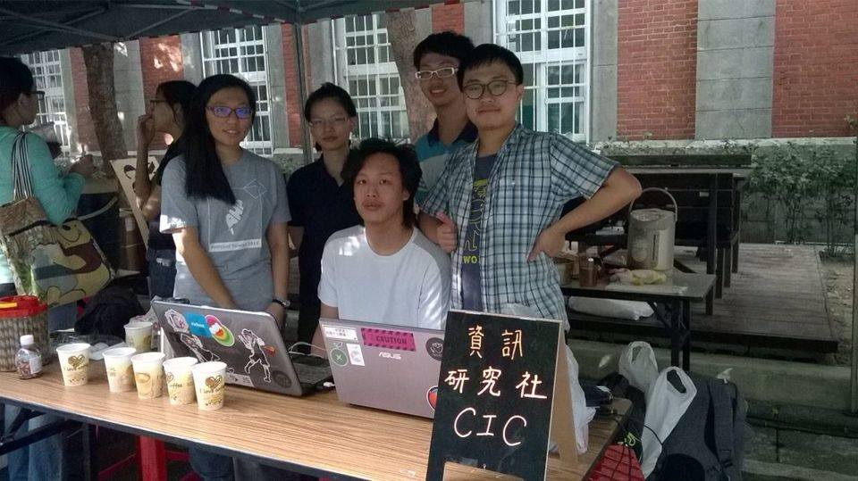
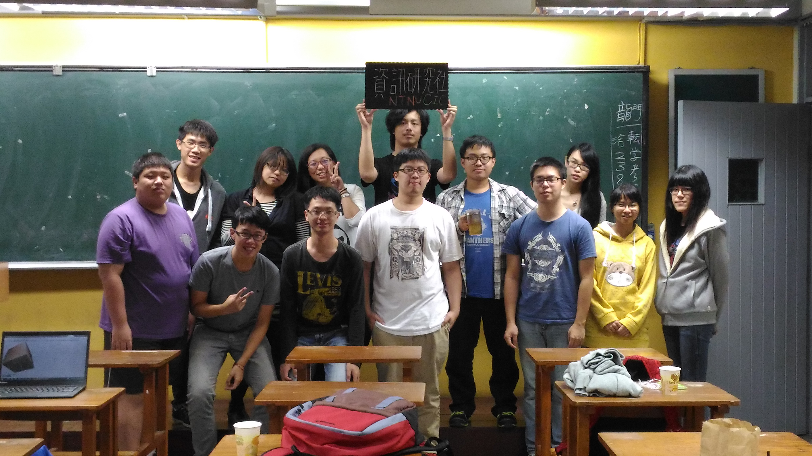
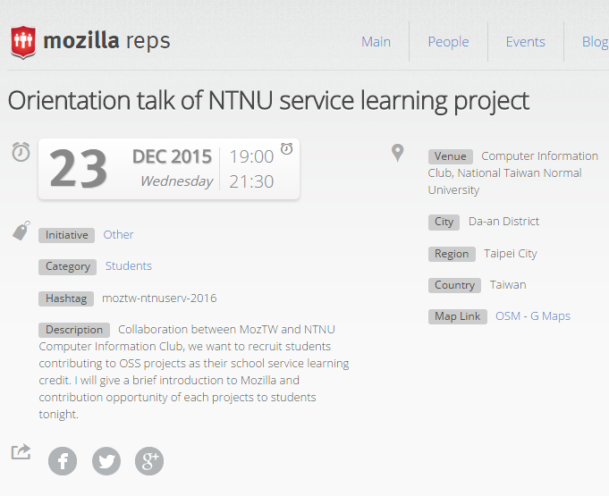
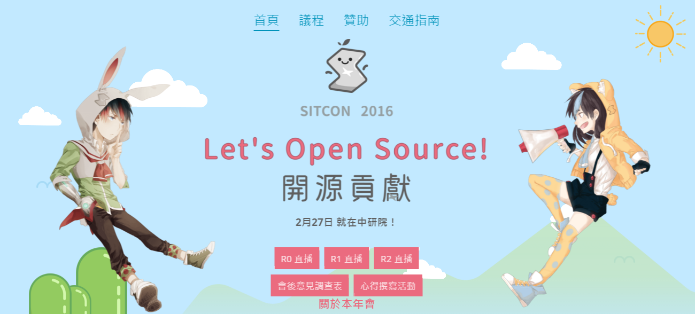
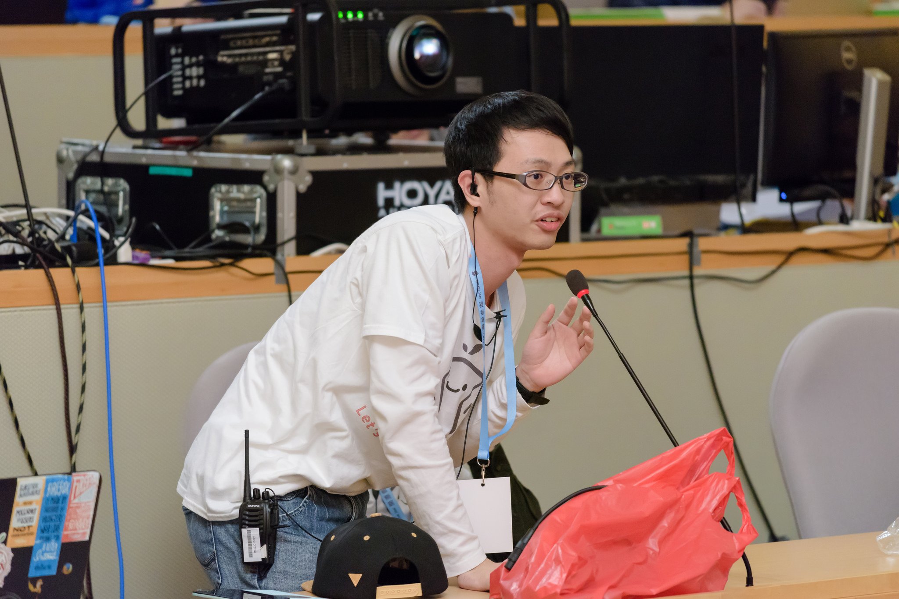
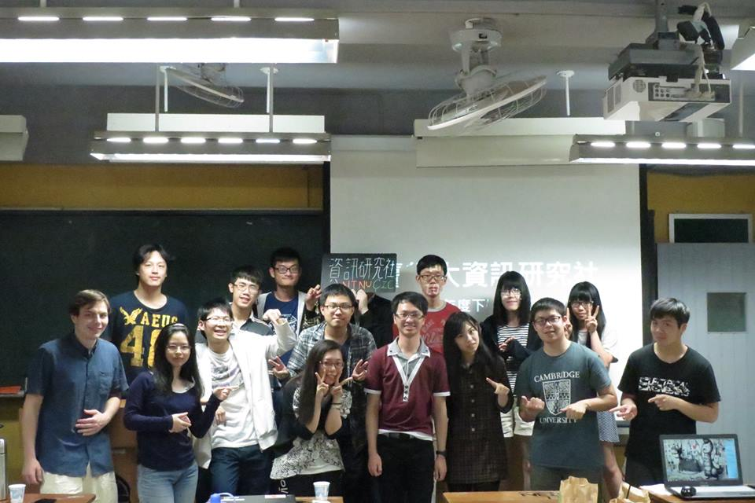

臺師大資訊研究社
2016 黃金雨季 社團博覽會
社團宗旨
提供一個讓所有對資訊有興趣的人可以互相交流學習，並找到志同道合朋友的地方，也讓那些對資訊領域有興趣，卻不得其門而入者可以有一個加入我們的方法。上學期回顧
迎新擺攤
第一次迎新茶會
社課-Javascript
社課-HTML

主題式社課
校慶擺攤
第二次迎新茶會
講座 x 服務學習
SITCON 2016
擷取自:http://sitcon.org/2016/
SITCON 2016
上學期成果：
本學期活動
迎新
社課
服務學習
講座
迎新
課程介紹
課程方向
了解程式運行邏輯
學習特定程式語言
了解程式邏輯
了解程式邏輯
使用圖像化的Scratch
所見即所得
使用滑鼠就可以寫程式
Scratch
Scratch簡介
由MIT終身幼稚園組開發
使用圖形化程式組件表達指令
幫助建立程式設計的知識
課程安排
3/14, 3/21, 3/28進行Scratch教學
4/25進行Scratch成果發表
請大家利用中間的時間好好製作藝術品吧
學習特定語言
學習特定語言
使用Python作為目標語言
希望以易學為主
PYTHON簡介
高階動態語言
有很多方便的函式庫
強制縮排使用
課程安排
5/2, 5/9, 5/16, 5/23, 5/30
共有5周進行Python課程
6/6 成果展示發表
課程總覽
3/14~3/26: Scratch課程
4/4: 國定假日
4/11,4/18: 期中考及考前停課
4/25: Scratch成果發表
5/2~5/30: Python課程
6/6: Python成果發表
6/13,6/20: 期末考及考前停課
暑假開始啦~~
服務學習（二）
服務內容？
修電腦？
我們才不是工具人呢！！
如果你想當......
我也不會阻止你啦（欸
還能作什麼？
擔任社群、研討會志工
e.g. SITCON, COSCUP, MozTW......
參與開源計畫
e.g. Wikipedia, Github......
NTNUCIC
X
MozTW X wikipedia X OSSACC
MozTW
Mozilla 臺灣社群
Mozilla 軟體中文化支援
推廣自由文化課程與活動
維基百科臺灣社群
維基百科中文化支援
維基百科詞條建置與擴充
OSSACC
教育部校園自由軟體數位資源推廣服務中心
校園自由軟體使用、推廣及教育訓練
建立自由合法的電腦使用環境
主要工作內容
如果你有一點程式能力
- Firefox/Firefox OS Bug
- MozTW 網站修改
- Firefox 套件開發
- 自由軟體開發
- 校園資訊環境建立
- etc
不會寫程式也別擔心
- Mozilla 網站介面翻譯
- 影片字幕聽打、翻譯
- 翻譯 Mozilla 相關文件
- 維基百科詞條建置與翻譯
- 翻譯資訊相關教材